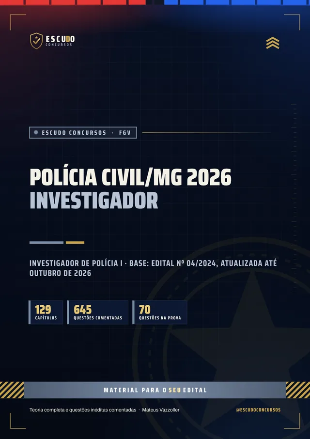
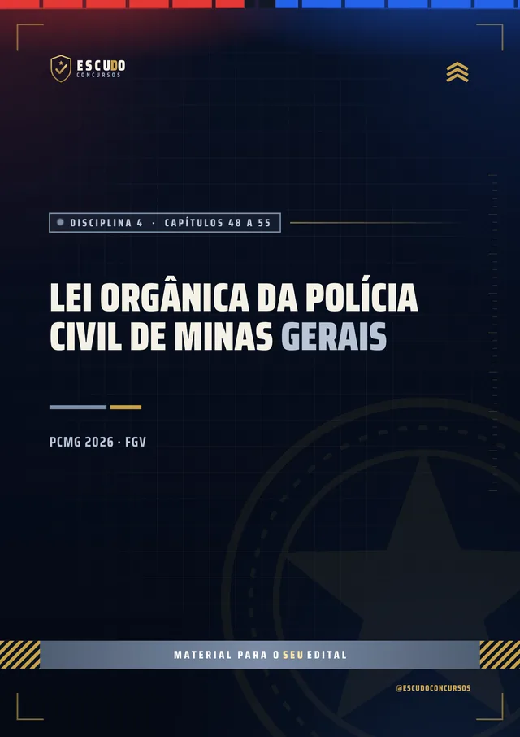
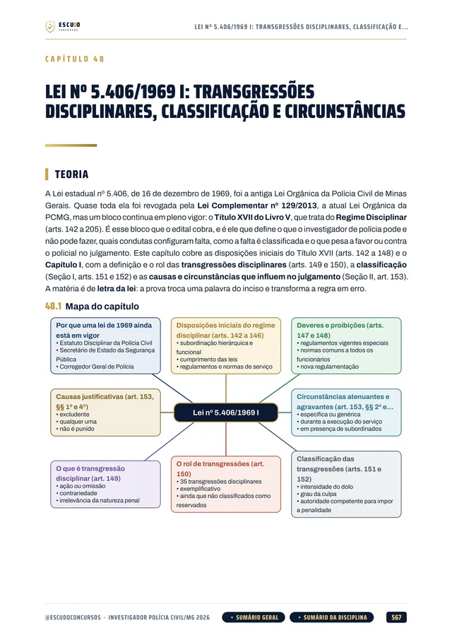
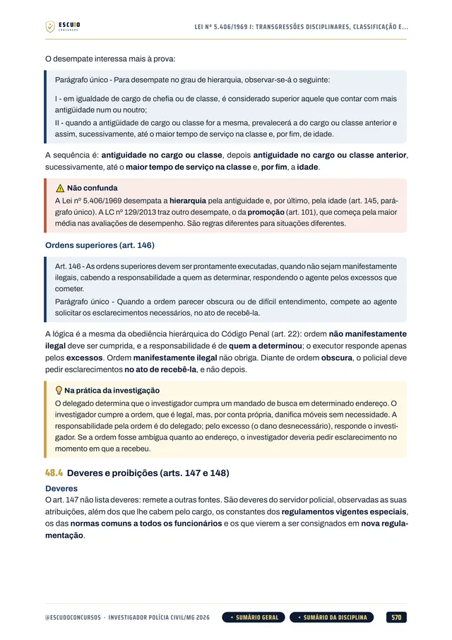
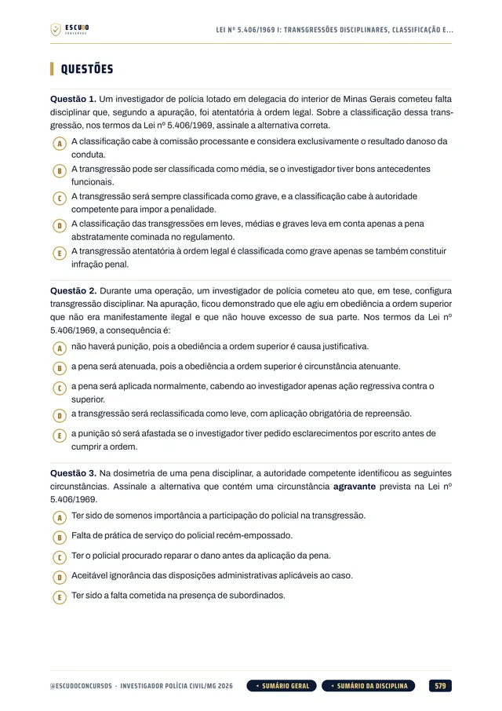
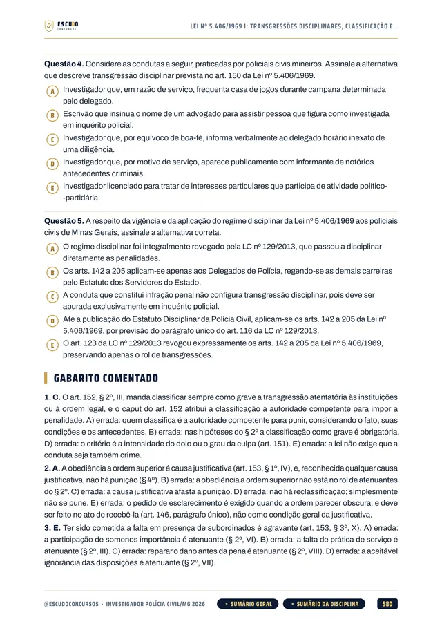

Simulado 1
No meio do caminho
Cobre a primeira metade do programa de cada disciplina, para medir onde você está e ajustar o estudo.
30 dias após a compra
Material independente, sem vínculo com a Polícia Civil de Minas Gerais.

645questões
comentadas
ConcursoPCMG 2026Investigador
Briefing
PCMG 2026 · Apostila em PDF
O novo concurso da Polícia Civil de Minas Gerais foi noticiado para este ano e o edital ainda não saiu. O seu material cobre as 12 disciplinas que a FGV cobrou da última vez? Curso feito a partir do último edital de Investigador (nº 04/2024), item por item, com questões no estilo FGV e gabarito comentado.
de R$ 47 por
R$37
com o cupom PCMG37 até 31/12/2026. Pelo botão, o cupom já vai preenchido.
R$47
Curso completo, com acesso imediato.
Terreno
O concurso
A imprensa noticiou, em outubro de 2026, um novo concurso da Polícia Civil de Minas Gerais com cerca de 3 mil vagas, ainda sem edital publicado. Este curso segue o programa do último edital de Investigador de Polícia I, o nº 04/2024, da banca FGV: 165 vagas, nível superior e prova de 70 questões de 5 alternativas, de (A) a (E), com 4 horas de duração.
Para passar, é preciso acertar 50% da prova objetiva, 35 questões, sem desconto por erro. O desempate é pela maior nota em Noções de Direito. Quando o novo edital sair, o programa será conferido e o curso, ajustado.
| Módulo | Disciplinas | Questões |
|---|---|---|
| Conhecimentos Básicos | Língua Portuguesa (10), Raciocínio Lógico-Matemático (6), Informática Básica (8) e Lei Orgânica da PCMG (6) | 30 |
| Noções de Direito | Direito Administrativo (6), Direito Constitucional (6), Direito Penal (5), Direito Processual Penal (5) e Legislação Penal e Processual Extravagante (4) | 26 |
| Específicos | Direitos Humanos (4), Medicina Legal (5) e Criminologia (5) | 14 |
| Cada questão vale 1 ponto. | 70 |
Protocolo
O formato
Você estuda lendo, no seu ritmo, pela área de membros da Hotmart ou com os arquivos baixados. O curso foi feito a partir do Edital nº 04/2024, item por item, na ordem do conteúdo programático do Anexo I, com a legislação federal e de Minas Gerais conferida no texto oficial vigente em outubro de 2026.
Reconhecimento
Páginas reais do PDF
Toque numa página para ver em tamanho maior.





Equipamento
O que você recebe
Curso em PDF organizado em módulos pelas disciplinas do edital, com 1.592 páginas no padrão visual ESCUDO, para ler no computador, no tablet, no celular ou no app da Hotmart. Não há videoaulas.
129 capítulos cobrindo as 12 disciplinas da prova: Língua Portuguesa e Redação Oficial, Raciocínio Lógico-Matemático, Informática, Lei Orgânica da PCMG, Direito Administrativo, Constitucional, Penal, Processual Penal, Legislação Penal e Processual Extravagante, Direitos Humanos, Medicina Legal e Criminologia.
645 questões inéditas com 5 alternativas, de (A) a (E), no estilo da FGV, todas com gabarito comentado: por que a correta está correta e onde erra cada uma das outras quatro.
Lei Orgânica da PCMG em 8 capítulos, com a Lei estadual 5.406/1969 (regime disciplinar) e a Lei Complementar 129/2013 (organização e carreiras), transcritas do texto oficial da Assembleia Legislativa de Minas Gerais.
Legislação Penal e Processual Extravagante em 12 capítulos (execução penal, crimes hediondos, interceptação, trânsito, armas, Maria da Penha, drogas, organizações criminosas, abuso de autoridade e pacote anticrime) e Medicina Legal e Criminologia, com casos de perícia e de investigação.
Teoria com recursos para memorizar: mapa de cada capítulo, esquemas, fluxogramas, quadros de "pegadinha" e "não confunda", caso prático na rotina do investigador, resumo esquematizado e pontos-chave de revisão em cada capítulo.
Navegação clicável: do sumário você vai direto ao capítulo, e volta pelo botão do rodapé.
2 simulados inéditos no formato exato da prova (70 questões), cada um com caderno de comentários e folha de nota com a linha de aprovação em 35 acertos.
Plano de ação
Área de membros
| Módulo | Conteúdo | Liberação |
|---|---|---|
| M0 Comece aqui | Apresentação + capítulo 001 (como é a prova e como usar o curso). Bônus: PDF completo para baixar e imprimir | Na compra; o PDF completo no 8º dia |
| M1 Língua Portuguesa e Redação Oficial | Capítulos 002 a 020 | Na compra |
| M2 Raciocínio Lógico-Matemático e Informática | Capítulos 021 a 047 | Na compra |
| M3 Lei Orgânica da PCMG | Capítulos 048 a 055 | Na compra |
| M4 Direito Administrativo e Constitucional | Capítulos 056 a 071 | Na compra |
| M5 Direito Penal | Capítulos 072 a 087 | Na compra |
| M6 Direito Processual Penal | Capítulos 088 a 096 | Na compra |
| M7 Legislação Penal e Processual Extravagante | Capítulos 097 a 108 | Na compra |
| M8 Direitos Humanos, Medicina Legal e Criminologia | Capítulos 109 a 129 | Na compra |
| M9 Simulado 1 | 70 questões, caderno de comentários | 30 dias após a compra |
| M10 Simulado 2 | 70 questões, caderno de comentários | 60 dias após a compra |
Treinamento
Treino no formato da prova
Cada simulado tem 70 questões, no formato exato da prova, com caderno de comentários e folha de nota.
Simulado 1
Cobre a primeira metade do programa de cada disciplina, para medir onde você está e ajustar o estudo.
30 dias após a compra
Simulado 2
Cobre a segunda metade do programa de cada disciplina, para o seu teste final.
60 dias após a compra
Perfil
Para quem é
Para quem vai prestar Investigador de Polícia da PCMG e quer estudar já pelo programa do último edital, sem esperar o novo e sem perder tempo com assunto que não cai.
Proteção
Você tem 7 dias de garantia pela Hotmart. Se não for o que você esperava, pede o reembolso pela própria Hotmart, dentro do prazo.
Cronograma
Sem surpresa na área de membros
Na compra: todas as disciplinas em PDF, uma por módulo, com a teoria e as questões comentadas. É o curso inteiro, para começar a estudar no mesmo dia.
8 dias após a compra: o PDF completo para imprimir. É o mesmo conteúdo dos módulos num arquivo só, liberado depois da garantia de 7 dias.
Simulado 1: 30 dias após a compra, para medir onde você está no meio da preparação.
Simulado 2: 60 dias após a compra, para o teste final.
O PDF completo e os simulados aparecem bloqueados na área de membros até a data de cada um: não é conteúdo faltando, é a liberação programada.
Instrução
Dúvidas
Não. É um curso 100% em PDF: teoria, questões comentadas e simulados para ler e resolver.
O acesso é imediato depois da confirmação do pagamento, pela área de membros da Hotmart (web ou app). O PDF completo para baixar e imprimir é liberado no 8º dia.
O Simulado 1 é liberado 30 dias após a compra e o Simulado 2, 60 dias após a compra.
Ainda não. O curso segue o programa do último edital de Investigador (nº 04/2024, FGV). Quando o novo edital sair, o programa será conferido e o curso, ajustado.
As 645 questões de treino e as dos simulados são inéditas, escritas no estilo da FGV a partir do conteúdo do edital.
Você tem 7 dias de garantia pela Hotmart. Se não for o que você esperava, pede o reembolso.
Missão
PCMG 2026 · Investigador
de R$ 47 por
R$37
com o cupom PCMG37 até 31/12/2026.
R$47
Curso completo, com acesso imediato.
Material para o SEU edital. ESCUDO Concursos.